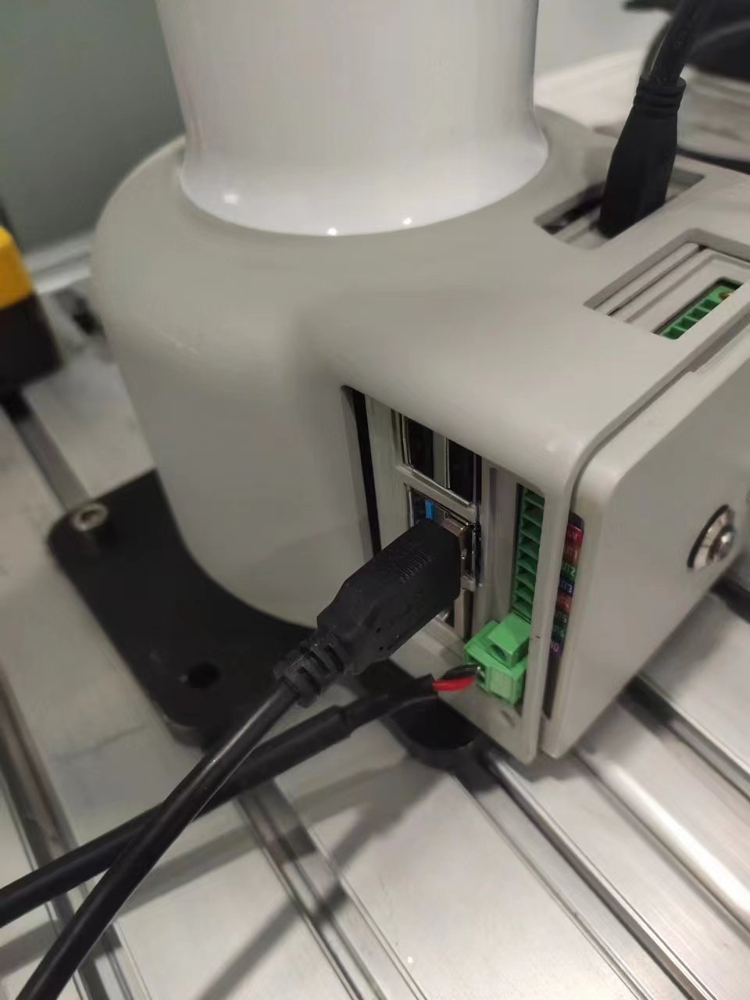
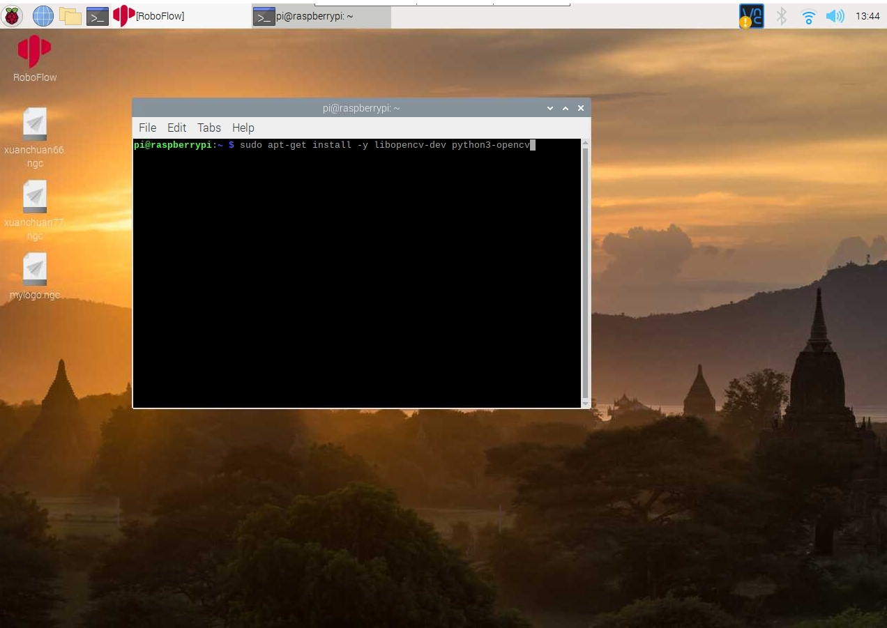
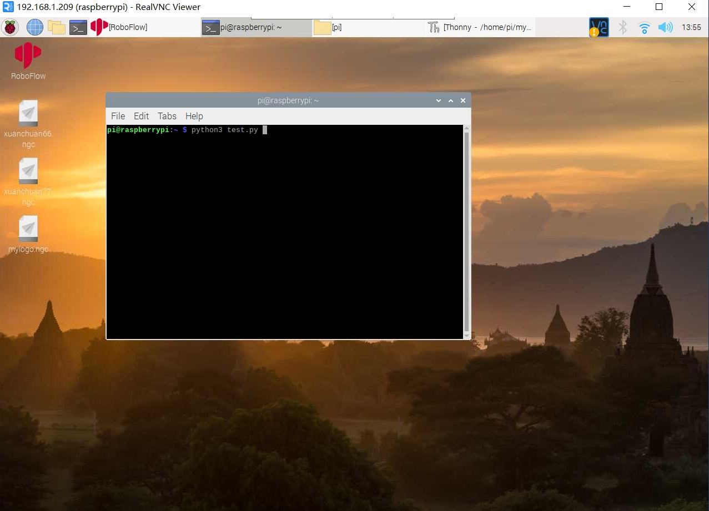

myCobotPro 摄像头模块
兼容型号： myCobot 320, myCobot Pro 630、myCobot Pro 600、myCobot Pro 450
产品图片

规格说明：
| 名称 | myCobotPro 摄像模组 |
|---|---|
| 型号 | myCobot_Pro_cameraHolder_J6 |
| 材料 | 光敏树脂 |
| USB 协议 | USB2.0 HS/FS |
| 镜头焦距 | 标配 1.7mm |
| 视场角度 | 约 60° |
| 支持的系统 | Win7/8/10、Linux、MAC |
| 固定方式 | 螺丝固定 |
| 使用环境要求 | 常温常压 |
| 适用设备 | myCobot 320、myCobot Pro 600、myCobot Pro 630、myCobot Pro 450 |
摄像头法兰 : 机器视觉
简介
- USB 高清摄像头可搭配吸泵、自适应夹爪、人工智能套装等，eye in hand 实现精确定位与标定。
安装使用
- 检查配件包东西是否齐全：螺丝及内六角扳手、带 usb 线的摄像头模组

摄像头安装：
结构安装：
- 将摄像头模组根据需要的方向对准机械臂末端，配合内六角扳手拧紧螺丝

- 将摄像头模组根据需要的方向对准机械臂末端，配合内六角扳手拧紧螺丝
电气连接：
- 将 USB 线插入底座 USB 接口： 
python编程控制
进入机器人系统，打开终端输入下列指令安装opencv
sudo apt-get install -y libopencv-dev python3-opencv

新建一个python文件，填入以下代码
#encoding=utf-8
import cv2
import numpy as np
cap = cv2.VideoCapture(0)
while(True):
ret, frame = cap.read()
cv2.imshow('frame', frame)
# 按下'q'退出
if cv2.waitKey(1) & 0xFF == ord('q'):
break
cap.release()
cv2.destroyAllWindows()
然后在终端用python3 运行刚刚新建的python文件 